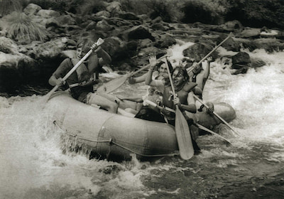

Mission:
Our Mission is helping people to have exciting adventures while enjoying the Great Pacific Northwest and it's rivers and lakes.We also strive to bring closer together families and teams through team based activities.


Mission:
Our Mission is helping people to have exciting adventures while enjoying the Great Pacific Northwest and it's rivers and lakes.We also strive to bring closer together families and teams through team based activities.
Our family has always had a love for floating down the rivers. Our Great Grandfather was instrumental in helping to create the trips we now offer. In the early 1930's he spent most of his time figuring out the best ways to navigate the amazing rivers of the Pacific Northwest. He was instrumental in setting up the resting and camping sites. He loved to take people on the rivers and show them the amazing sights, animals and experiences you can only experience from the rivers and lakes.
In the late 1990's we decided to set dedicated routes and trips and to offer them for a nominal fee to the public. We've been able to work closely with the BLM and the Park Rangers in the Pacific Northwest to ensure the safety of our quests. We have excursions starting from easy kayaking on the lakes to whitewater rafting down the Moyie and Kootenai Rivers. We cover mostly Washington, Idaho, and Montana, but we will make trips to the COlorado River if you would like.